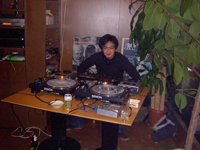
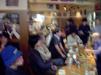
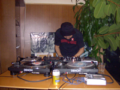

strange music page
* * * strange music night #1 (2003.10.18)



[strange music night #1]とか言って、もう閉店した元住吉freak outをわざわざ開けてもらって。ヘンな音楽イベントをやらせていただきました。
いやその最初はどーなる事かと思ってたんですけど、結果としては沢山のお客さんに来て頂いて。ものすごく嬉しかったです。
来ていただいた方、改めてほんとにありがとうございます。お店にも（マスター、インターネットやらないって言ってたから見てないだろけど）ほんと感謝です。ほんとに無くなってしまうのが惜しいなと思います。
あと勿論協力して頂いた、DJの方々。当初の意図としては「何でもアリ」みたいな事は思ってたんですけど、おかげさまで自分じゃ想像つかないくらい「何でもアリ」なイベントになりました。ありがとうございます、またやりましょう。
ちなみにテレビに映っていたジェネシスとイエスの映像はsatomilkさんに持ってきてもらいました、結構ウケてたなぁ。あとザッパのビデオは店のマスターの所有物。こちらもサンクスです。
あ、そうだなんかこの日は緊張してて（本番に弱いタイプ）写真とかほとんど撮らなかったので、デジカメで写真撮った人は送っていただけると嬉しいです。
来て頂いた方にはどんなイベントに見えたのか結構謎なのですが、やってる本人的にも非常に楽しかったので、またやりたいなーと思います。その時はまたよろしくお願いします。よろしくね。（他力本願かよ！って声が聞こえてきそーな・・・）
[その時のフライヤー] (369KB)
セットリストです↓長いです。敬称略で失礼します。一行付いてるのは菅原コメントです。
改めて見てみると、他の人がかけた音源、全然わからんです。よくこんなにかぶらなかったなぁ。
風街まろん |
菅原悠 |
さいと |
sasakidelic |
クドウハルヲ |
堀越裕 |
細谷滝音（鳥医者） |
菅原圭
#当然の如くザッパで始め、そしてプログレ～トラッド・・・南ヨーロッパっぽいのが炸裂してました。
- FRANK ZAPPA/PEACHS EN REGALIA
- ISABELLE ANTENA/VILLAGE OF THE SUN
- CURVED AIR/ONCE A GHOST,ALWAYS A GHOST
- ARTI+MESTIERI/SAPER SENTIRE
- MARC RIBOT/NATURE ABHORS A BACUUM CLEANER
- FAIRPORT CONVENTION/DIRTY LINEN
- IVO PAPASOV/BULCHENSKA RATCHENITSA
- CAL TJADER/MINDORO
- SHUGGIE OTIS/XL-30
- GENTLE GIANT/ON REFLECTION
#他にも色々混ぜてたらしいです。音響系ヒップホップ・・・でイイのかな？かっちょよかった。
- ジムオルーク
- アオキタカマサ
- 池田亮司
- muto takeshi
- ミートビートマニフェスト
- ヌジャべス
- shingo2
- so takahashi
- amon tobin
- スコットへレン
- nex time
#なんつか、色々な国のプログレが・・・クリムゾンっぽい井上陽水が。
- I AM SPOONBENDER / Reality Dealer [URL]
- NEED NEW BODY / Titiepop [URL]
- YELLOW KITCHEN / T at A（韓国エレクトロニカ？） [URL]
- BARNES AND BARNES / Fish Heads（同）[URL]
- HARRY ROESLI / Lembe Lembe（ガムラン＋ムーグ）
- HARRY ROESLI / Kalima Gobang
- 井上陽水 / 夜のバス（エピタフ系好きすき）
- ADA / Madah Illahiah（構成がFirth of Fifthだ） [URL]
- LAENFANT / ??（タイのカーディガンズ）[URL]
#やー、流石の一言。サイン波モノもしっかりかけてました。
- Vagabond & Harry "Christmas was Late!!!"
- Serge Gainsbourg "Freedom Rock / Mister Freedom" (from O.S.T. "Mister Freedom")
- Raymond Scott " Powerhouse"
- Stock, Hausen & Walkman "Hairy Globe"
- Sachiko M. "Don't Touch" + Ryoij Ikeda "testone" mix
- Suicide "Ghost Rider"
- Kim Hiorthoy "Cow Cow (sheep sheep)"
- Busta Rhymes featuring PHARRELL "Light Your A** On Fire"
- Lady Of Rage "Unfucwitable"
- Serge Gainsbourg featuring Telegram "Overseas Telegram"
- Faust "Untitled" (1' 18")
- Yann Tomita "Laughter Robot in Silicon Valley"
- Sandii "Mercy"
- Elly Ameling, Dalton Baldwin "An die Musik, Op.88 No.4 D.547(Franz Schubert)
- Serge GainsBourg "Sea, sex and sun"
- The Velvet Underground "Guess I'm Falling In Love (Instrumental Version)"
- Joy Division "Warsaw"
- Neu! "Crazy"
- Caetano Veloso "Let It Bleed"
- dreamies (auralgraphic entertainment) "Program Eleven" + Sachiko M. "Don't Push" mix
- Sun Ra "Spontaneous Simplicity" (Live)
- Faust "No Harm"
#わりと爽やかなモノも混じってたけど、今回の中に混じるとコントラストが凄かった。
- Syd Barrett/Bob Dylan blues
- Doors/Break on through
- Velvet Underground/run run run
- Stoogies/No Fun
- CCR/Suzie Q
- JB's/Transmograpfication
- Nicky Hopkins/Waiting for the band
- Todd Rundgren/It takes two to tango
- Trans Am/Futre World
- Yes/Tempus Fugit
#久々にハルヲさんの超ハイテンションDJを見ました、連続射殺魔が凄かった・・・unbeltipoはCD出たら買います。
- マグマ／最後の７分間（1970－1977第１段階）
- オールタイチ／ViVi-MAR-Chan
- unbeltipo／Method of panic
- 連続射殺魔／Mobile Chocolate
- ザ・レジデンツ／「ア・デイ・イン・ライフ」の谷の向こうに
- スーパーモコ・ウルトラビーバー＆超オリーブ／エニウェイ・ザ・ウィンド・ブロウズ
- エグベルト・ジスモンチ／コラソン・ダ・シダーヂ
- ファンタスティック・エクスプロージョン／BLUE CHONWA
- オーガニゼーション／SOFT SPACE
#解説はapres un revesの10/19の日記を参照の事。
さっきまでの狂気のテンションを一気にクールダウン。
- Jack Wilson / Most Unsoulful Woman
- Luc Ferrari / Danses Organiques no. 6
- Miles Davis / Ascent
- Pharoah Sanders / AUM
- Archie Shepp / Malcolm , Malcolm , Semper Malcolm
- Pierre Schaeffer / Quatre Etudes de Bruits No.1
- Olivier Messiaen / Trois Petites Liturgies de la Presence Divine No.3
- Michelle Doneda , Erik M , Jean-Marc Montera / Notion
#俺はやらない方が良かったのでは・・・・？
- The Nice/Daddy Where Did I Come From
- Matching Mole/Instant Pussy
- After Dinner/Glass Tube
- Egg/Boilk
- Amon Duul II/Cerberus
- Faust/It's Rainy Day, Sunshine Girl
- Bondage Fruit/Holy Roller
- Nurse with Wound - Stereolab/Animal or Vegitable
- Ground Zero/平和に生きる権利+篠新3/4
- Nurse with Wound - Stereolab/Animal or Vegitable (最後の部分)
- Killing Time/BOB (前半)
- Gong/Three Blind Mice
- Killing Time/BOB (後半)
- Frank Zappa/Willie The Pimp
・・・では、次回[strange music night #2]（時期未定）にて。